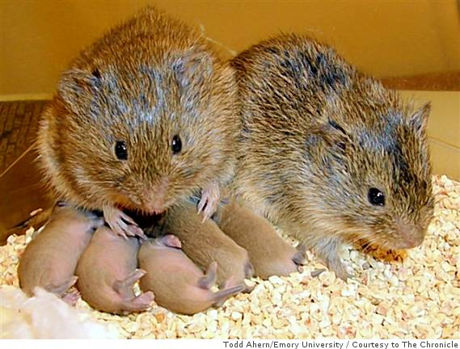

6.4: Hormones and Behavior: Aggression and Parental Behaviors
Many different hormones can affect a wide range of behaviors. This section gives a brief overview of two illustrative examples: the effects of hormones on aggression and in parental behaviors and bonding.
Aggressive Behaviors
Aggressive behavior can arise whenever individuals’ interests are in conflict (Nelson, 2006). Conflicts most often arise over limited resources such as territory, food, or mates. A social interaction decides which animal gains access to the contested resource. Sometimes that interaction involves physical aggression, but in many cases, a submissive posture from one animal or ritualized combat to establish dominance can resolve conflicts without physical harm.
Overwhelming evidence suggests that androgenic steroid hormones, particularly testosterone, mediate male aggressive behavior across many species. First, seasonal variations in blood concentrations of testosterone coincide with variations in aggression. For instance, aggressive behavior peaks for male deer in autumn when they are secreting high levels of testosterone. Second, aggressive behaviors increase during puberty when the testes become active, and blood concentrations of androgens rise. Juvenile deer do not participate in the fighting during the mating season. Third, male mammals are generally more aggressive than females. This is certainly true of deer—female deer rarely display aggressive behavior. Finally, castration typically reduces aggression in males, and subsequent testosterone-replacement therapy restores aggression to pre-castration levels. Some exceptions to these general observations are outside the scope of this chapter.
In humans, males are generally more physically aggressive than females.[1] From early childhood, males consistently initiate more physical aggression than females, and many more men than women are convicted of violent crimes in North America. This sex difference in humans is widely recognized, but the underlying causes remain a subject of intense scientific debate. It is possible that males are more aggressive than females because: a) androgens promote aggressive behavior and males have higher androgen levels; b) brains of males are exposed to androgens prenatally causing brain “wiring” to organize in a way that increases aggression; and/or c) males are encouraged, and females are discouraged by family, peers, or others from acting aggressively. These hypotheses are not mutually exclusive, and are difficult to separate to account for sex differences in human aggression.
In humans, disentangling environmental and physiological influences on behavior is challenging. For instance, males and females differ in their rough-and-tumble play at a very young age, which might suggest an early physiological influence. However, parents usually play more roughly with male infants, which might suggest that sex differences in aggression are learned. Experimentally manipulating variables (e.g., by injecting testosterone) and tightly controlling the environment is not possible in human studies, so hormonal effects on sex-differentiated behavior is studied in non-human animal models.
Studies on mice reveal that sex differences in aggression result from both perinatal and adult androgen exposure. Male mice castrated early show low aggression even with adult testosterone treatment, while females given testosterone perinatally and in adulthood show male-like aggression. Thus, in mice and many other species, androgens both “organize” the brain perinatally for aggression and “activate” aggressive behavior in adulthood. Finally, while we focus on testosterone here, other hormones including cortisol, corticosterone, and vasopressin are involved in aggression, and there is no one-to-one relationship between a hormone and behavior.
Parental Behaviors and Bonding
Parental behavior in mammals is crucial for offspring survival. In rats, who give birth to underdeveloped (altricial) young, mothers exhibit stereotyped behaviors like nest-building, nursing, and pup retrieval. Typically, adult rats avoid pups due to aversion to their smell and neophobia (the fear of new things), but daily exposure can sensitize them to behave maternally. However, for new mothers, immediate maternal behavior is necessary for survival, and is hormonally mediated. Around the time a mother gives birth, a rapid decline in progesterone, coupled with high estradiol, prolactin, and oxytocin levels overrides the fear response, enabling maternal behavior in the presence of newborns.
Rat maternal behavior involves brain activity of the hypothalamus’ medial preoptic area. This region can be inhibited by the amygdala and fear responses. Lesions in the amygdala or its input smell pathways can disinhibit (i.e., increase) maternal behavior. Hormones likely reduce amygdala activation, thus permitting maternal behavior. Studies show that giving female rats oxytocin increases maternal behavior and attachment to their pups (Kendrick, 2000).
One of the best studied examples of the biological basis of social bonding and attachment comes from prairie voles. Prairie voles are a North American rodent that display highly social behavior, have monogamous relationships after mating, and share parental duties such as resource collection and care for their young (Figure 10). Their close relative, the montane vole, on the other hand, is a non-social species that does not form pair bonds and only the female cares for the young. Comparing these species has allowed researchers to identify several neurochemical signals implicated in bonding.

Oxytocin and vasopressin, similar neuropeptides, are crucial for pair bonding. In the social prairie voles, oxytocin and vasopressin are released by the hypothalamus in response to mating and act on limbic and reward systems. Female prairie voles have more oxytocin receptors in reward circuitry than asocial montane voles. After mating, oxytocin binds to these receptors to increase pair bonding and reinforce the rewarding association with a partner. Experiments show that giving oxytocin to female prairie voles increases bonding, while blocking oxytocin receptors decreases bonding. In male prairie voles, similar effects occur with vasopressin. Male prairie voles release vasopressin after mating; they have more vasopressin receptors in reward circuitry compared to montane voles; and giving vasopressin increases bonding, while blocking it decreases bonding. Notably, when males of a promiscuous species are genetically modified to have more vasopressin receptors, those males display increased pair bonding and parental behavior (Rigney et al., 2022). This underscores the causal role of hormones in social bonding.
Human bonding and parental behaviors (most often studied in mothers) are also shaped by hormones. Oxytocin, vasopressin, and the reward system play crucial roles in human bonding. fMRI studies show increased activation in reward-related brain regions when subjects view pictures of their children or partners, compared to friends. These regions express oxytocin and vasopressin receptors, and the hormones are released during bond-forming activities like breastfeeding and intercourse. In addition to oxytocin and vasopressin, cortisol levels positively correlate with mothers’ affectionate and vocal behaviors towards infants, especially in mothers with positive prenatal attitudes. Cortisol likely enhances maternal care indirectly by increasing the mother’s arousal and responsiveness to infant cues. High-cortisol mothers are more attracted to and better at identifying their infants’ odors and cues (Fleming et al., 1997).
In sum, hormones play a crucial role in shaping parental behaviors and bonding in both mothers and fathers across various species, influencing brain activity and behavioral responses that are essential for offspring care and survival.
Text Attributions
Parts of this section adapted from:
Nelson, R. J. (2023). Hormones & behavior. In R. Biswas-Diener & E. Diener (Eds), Noba Textbook Series: Psychology. Champaign, IL: DEF publishers. Retrieved from http://noba.to/c6gvwu9m
Hedges, V. (2022). 55. Social Bonding. In Introduction to Neuroscience. https://openbooks.lib.msu.edu/introneuroscience1/chapter/social-bonding/ CC BY-NC-SA 4.0
Media Attributions
- Aggression © Riccardo Cuppini via wpr.org is licensed under a CC BY-NC (Attribution NonCommercial) license
- Praire vole © Todd Ahern is licensed under a CC BY (Attribution) license
- Mom and daughter © Noba is licensed under a CC BY (Attribution) license


- However, females exhibit more relational aggression (i.e., the purposeful harm to another through a social relationship; Bowie, 2007). ↵
A form of social interaction that includes threat, attack, and fighting.
Functional magnetic resonance imaging (fMRI): A neuroimaging technique that infers brain activation by measuring changes in oxygen levels in the blood.